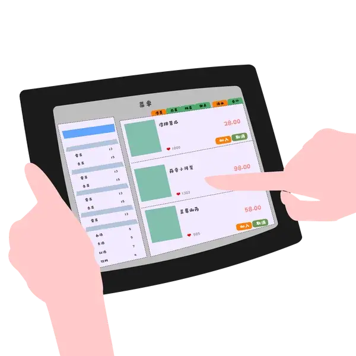
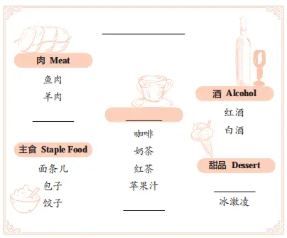
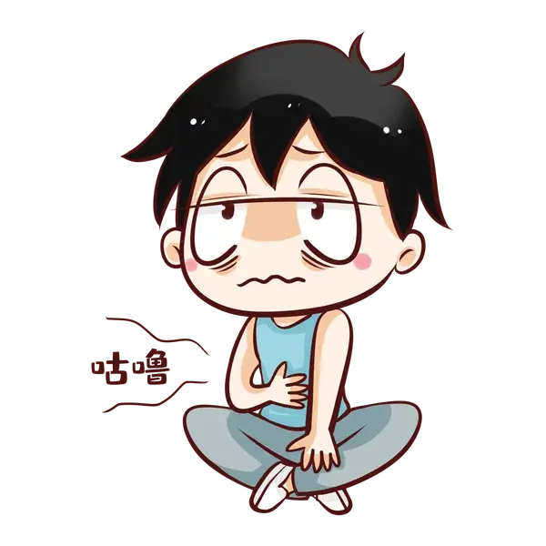
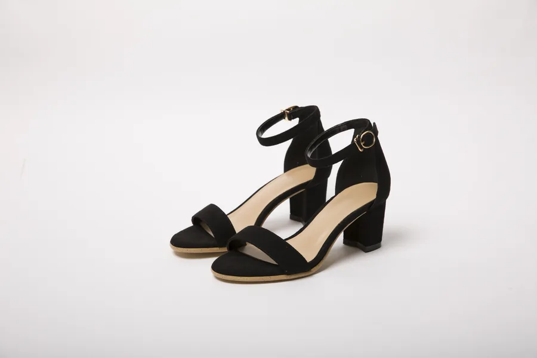
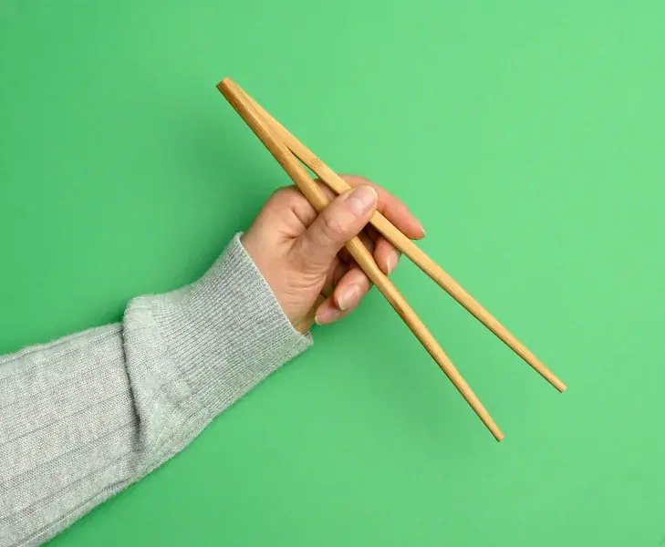
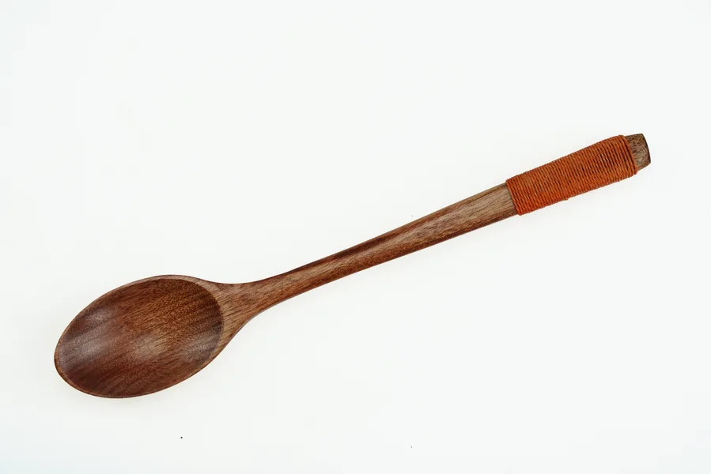
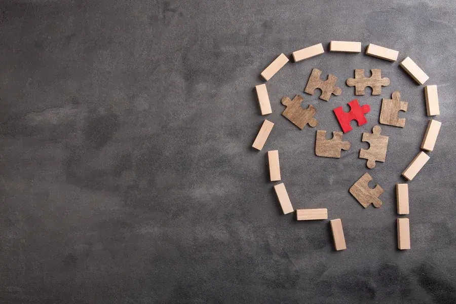

菜单
thực đơn
danh từChạm vùng trống để lật thẻ

菜单上有很多好吃的菜。 🔊
Trên thực đơn có rất nhiều món ăn ngon.
你看一下菜单，想吃点儿什么？ 🔊
Bạn xem thực đơn một chút, muốn ăn món gì?
Nghe hiểu và trao đổi về món ăn, dịch vụ nhà hàng và thói quen ăn uống cá nhân.
Sử dụng đại từ nghi vấn để chỉ bất kỳ người, vật, cách thức, thời gian hoặc địa điểm nào.
Nhận biết và sử dụng từ vựng về dụng cụ ăn uống của người Trung Quốc.

Quan sát sơ đồ và hoàn thành các chỗ trống: 鸡肉、饮料、蛋糕.
Mặt trước: chữ Hán, pinyin, nghĩa và từ loại. Mặt sau: hình ảnh và 2 ví dụ đầy đủ theo PowerPoint, kèm pinyin và bản dịch.
thực đơn
danh từChạm vùng trống để lật thẻ

菜单上有很多好吃的菜。 🔊
Trên thực đơn có rất nhiều món ăn ngon.
你看一下菜单，想吃点儿什么？ 🔊
Bạn xem thực đơn một chút, muốn ăn món gì?
lại; vừa…vừa…
phó từChạm vùng trống để lật thẻ
![又](data:image/svg+xml;charset=utf-8,%3Csvg%20xmlns%3D%22http%3A//www.w3.org/2000/svg%22%20width%3D%22900%22%20height%3D%22520%22%20viewBox%3D%220%200%20900%20520%22%3E%0A%20%20%20%20%20%20%3Cdefs%3E%3ClinearGradient%20id%3D%22g%22%20x1%3D%220%22%20y1%3D%220%22%20x2%3D%221%22%20y2%3D%221%22%3E%3Cstop%20stop-color%3D%22%23dbeafe%22/%3E%3Cstop%20offset%3D%221%22%20stop-color%3D%22%23e0f2fe%22/%3E%3C/linearGradient%3E%3C/defs%3E%0A%20%20%20%20%20%20%3Crect%20width%3D%22900%22%20height%3D%22520%22%20rx%3D%2242%22%20fill%3D%22url%28%23g%29%22/%3E%0A%20%20%20%20%20%20%3Ccircle%20cx%3D%22450%22%20cy%3D%22210%22%20r%3D%22125%22%20fill%3D%22white%22%20fill-opacity%3D%22.86%22/%3E%0A%20%20%20%20%20%20%3Ctext%20x%3D%22450%22%20y%3D%22260%22%20text-anchor%3D%22middle%22%20font-size%3D%22135%22%3E%F0%9F%8C%A7%EF%B8%8F%3C/text%3E%0A%20%20%20%20%20%20%3Ctext%20x%3D%22450%22%20y%3D%22410%22%20text-anchor%3D%22middle%22%20font-family%3D%22Arial%2C%20sans-serif%22%20font-size%3D%2242%22%20font-weight%3D%22700%22%20fill%3D%22%231f2937%22%3EL%E1%BA%A0I%20M%E1%BB%98T%20L%E1%BA%A6N%20N%E1%BB%AEA%3C/text%3E%0A%20%20%20%20%3C/svg%3E)
今天又下雨了。 🔊
Hôm nay lại mưa nữa rồi.
我又学了一个新词。 🔊
Tôi lại học thêm một từ mới.
đói
tính từChạm vùng trống để lật thẻ

我饿了，中午我们去哪儿吃饭？ 🔊
Tôi đói rồi, trưa nay chúng ta đi đâu ăn cơm?
我现在不饿，等一会儿再做饭。 🔊
Bây giờ tôi không đói, đợi một lát rồi hãy nấu cơm.
khát
tính từChạm vùng trống để lật thẻ
渴了吗？快点儿喝水。 🔊
Khát nước chưa? Mau uống nước đi.
运动后大家都很渴。 🔊
Sau khi vận động, mọi người đều rất khát.
khách khí; lịch sự
động/tính từChạm vùng trống để lật thẻ
别客气，请坐。 🔊
Đừng khách sáo, mời ngồi.
他说话很客气。 🔊
Anh ấy nói chuyện rất lịch sự.
đồ uống
danh từChạm vùng trống để lật thẻ
这种饮料很好喝。 🔊
Loại đồ uống này rất ngon.
他吃饭的时候要喝饮料。 🔊
Khi ăn cơm, anh ấy muốn uống đồ uống.
lâu; rất lâu
tính từChạm vùng trống để lật thẻ
![好久](data:image/svg+xml;charset=utf-8,%3Csvg%20xmlns%3D%22http%3A//www.w3.org/2000/svg%22%20width%3D%22900%22%20height%3D%22520%22%20viewBox%3D%220%200%20900%20520%22%3E%0A%20%20%20%20%20%20%3Cdefs%3E%3ClinearGradient%20id%3D%22g%22%20x1%3D%220%22%20y1%3D%220%22%20x2%3D%221%22%20y2%3D%221%22%3E%3Cstop%20stop-color%3D%22%23fef3c7%22/%3E%3Cstop%20offset%3D%221%22%20stop-color%3D%22%23ffedd5%22/%3E%3C/linearGradient%3E%3C/defs%3E%0A%20%20%20%20%20%20%3Crect%20width%3D%22900%22%20height%3D%22520%22%20rx%3D%2242%22%20fill%3D%22url%28%23g%29%22/%3E%0A%20%20%20%20%20%20%3Ccircle%20cx%3D%22450%22%20cy%3D%22210%22%20r%3D%22125%22%20fill%3D%22white%22%20fill-opacity%3D%22.86%22/%3E%0A%20%20%20%20%20%20%3Ctext%20x%3D%22450%22%20y%3D%22260%22%20text-anchor%3D%22middle%22%20font-size%3D%22135%22%3E%F0%9F%95%B0%EF%B8%8F%3C/text%3E%0A%20%20%20%20%20%20%3Ctext%20x%3D%22450%22%20y%3D%22410%22%20text-anchor%3D%22middle%22%20font-family%3D%22Arial%2C%20sans-serif%22%20font-size%3D%2242%22%20font-weight%3D%22700%22%20fill%3D%22%231f2937%22%3EM%E1%BB%98T%20TH%E1%BB%9CI%20GIAN%20D%C3%80I%3C/text%3E%0A%20%20%20%20%3C/svg%3E)
我好久没跳舞了。 🔊
Tôi đã lâu không nhảy.
他好久没来学校了。 🔊
Anh ấy đã lâu không đến trường.
phục vụ; dịch vụ
động từChạm vùng trống để lật thẻ
这个饭店的服务很好。 🔊
Dịch vụ của nhà hàng này rất tốt.
有问题可以去服务台问。 🔊
Có vấn đề gì thì có thể đến quầy dịch vụ để hỏi.
chỉ người làm một nghề
hậu tốChạm vùng trống để lật thẻ
![员](data:image/svg+xml;charset=utf-8,%3Csvg%20xmlns%3D%22http%3A//www.w3.org/2000/svg%22%20width%3D%22900%22%20height%3D%22520%22%20viewBox%3D%220%200%20900%20520%22%3E%0A%20%20%20%20%20%20%3Cdefs%3E%3ClinearGradient%20id%3D%22g%22%20x1%3D%220%22%20y1%3D%220%22%20x2%3D%221%22%20y2%3D%221%22%3E%3Cstop%20stop-color%3D%22%23dcfce7%22/%3E%3Cstop%20offset%3D%221%22%20stop-color%3D%22%23d1fae5%22/%3E%3C/linearGradient%3E%3C/defs%3E%0A%20%20%20%20%20%20%3Crect%20width%3D%22900%22%20height%3D%22520%22%20rx%3D%2242%22%20fill%3D%22url%28%23g%29%22/%3E%0A%20%20%20%20%20%20%3Ccircle%20cx%3D%22450%22%20cy%3D%22210%22%20r%3D%22125%22%20fill%3D%22white%22%20fill-opacity%3D%22.86%22/%3E%0A%20%20%20%20%20%20%3Ctext%20x%3D%22450%22%20y%3D%22260%22%20text-anchor%3D%22middle%22%20font-size%3D%22135%22%3E%F0%9F%91%A8%E2%80%8D%F0%9F%8D%B3%3C/text%3E%0A%20%20%20%20%20%20%3Ctext%20x%3D%22450%22%20y%3D%22410%22%20text-anchor%3D%22middle%22%20font-family%3D%22Arial%2C%20sans-serif%22%20font-size%3D%2242%22%20font-weight%3D%22700%22%20fill%3D%22%231f2937%22%3ENG%C6%AF%E1%BB%9CI%20L%C3%80M%20M%E1%BB%98T%20NGH%E1%BB%80%3C/text%3E%0A%20%20%20%20%3C/svg%3E)
他是这家饭店的服务员。 🔊
Anh ấy là nhân viên phục vụ của nhà hàng này.
哥哥是一个足球运动员。 🔊
Anh trai là một vận động viên bóng đá.
đôi; cặp
lượng từChạm vùng trống để lật thẻ

朋友送了我一双非常漂亮的筷子。 🔊
Bạn tặng tôi một đôi đũa rất đẹp.
她有一双大大的眼睛。 🔊
Cô ấy có một đôi mắt to.
đũa
danh từChạm vùng trống để lật thẻ

服务员，请再给我一双筷子。 🔊
Nhân viên phục vụ, làm ơn cho tôi thêm một đôi đũa.
我买了五双新筷子。 🔊
Tôi đã mua năm đôi đũa mới.
thìa; muỗng
danh từChạm vùng trống để lật thẻ

服务员，请给我一个勺子。 🔊
Nhân viên phục vụ, làm ơn cho tôi một cái thìa.
那个小勺子是弟弟的。 🔊
Cái thìa nhỏ kia là của em trai.
bát; chén
danh từChạm vùng trống để lật thẻ
我很饿，吃了两碗米饭。 🔊
Tôi rất đói, đã ăn hai bát cơm.
今天我去超市买了五个小碗。 🔊
Hôm nay tôi đi siêu thị mua năm cái bát nhỏ.
ngay; lập tức
phó từChạm vùng trống để lật thẻ
![马上](data:image/svg+xml;charset=utf-8,%3Csvg%20xmlns%3D%22http%3A//www.w3.org/2000/svg%22%20width%3D%22900%22%20height%3D%22520%22%20viewBox%3D%220%200%20900%20520%22%3E%0A%20%20%20%20%20%20%3Cdefs%3E%3ClinearGradient%20id%3D%22g%22%20x1%3D%220%22%20y1%3D%220%22%20x2%3D%221%22%20y2%3D%221%22%3E%3Cstop%20stop-color%3D%22%23fef9c3%22/%3E%3Cstop%20offset%3D%221%22%20stop-color%3D%22%23ffedd5%22/%3E%3C/linearGradient%3E%3C/defs%3E%0A%20%20%20%20%20%20%3Crect%20width%3D%22900%22%20height%3D%22520%22%20rx%3D%2242%22%20fill%3D%22url%28%23g%29%22/%3E%0A%20%20%20%20%20%20%3Ccircle%20cx%3D%22450%22%20cy%3D%22210%22%20r%3D%22125%22%20fill%3D%22white%22%20fill-opacity%3D%22.86%22/%3E%0A%20%20%20%20%20%20%3Ctext%20x%3D%22450%22%20y%3D%22260%22%20text-anchor%3D%22middle%22%20font-size%3D%22135%22%3E%E2%9A%A1%3C/text%3E%0A%20%20%20%20%20%20%3Ctext%20x%3D%22450%22%20y%3D%22410%22%20text-anchor%3D%22middle%22%20font-family%3D%22Arial%2C%20sans-serif%22%20font-size%3D%2242%22%20font-weight%3D%22700%22%20fill%3D%22%231f2937%22%3ENGAY%20L%E1%BA%ACP%20T%E1%BB%A8C%3C/text%3E%0A%20%20%20%20%3C/svg%3E)
快进去吧，电影马上开始了。 🔊
Mau vào đi, bộ phim sắp bắt đầu rồi.
他已经出机场了，马上就到。 🔊
Anh ấy đã ra khỏi sân bay rồi, sắp đến ngay.
nhiệt tình
tính từChạm vùng trống để lật thẻ
她是一位热情的服务员。 🔊
Cô ấy là một nhân viên phục vụ nhiệt tình.
这里的人非常热情。 🔊
Người ở đây rất nhiệt tình.
nếm; thử
động từChạm vùng trống để lật thẻ
我想尝尝你做的菜。 🔊
Tôi muốn nếm thử món ăn bạn làm.
我尝了一口饺子，很好吃。 🔊
Tôi nếm thử một miếng bánh chẻo, rất ngon.
nhớ; ghi nhớ
động từChạm vùng trống để lật thẻ

请你记住这个电话号码。 🔊
Hãy nhớ số điện thoại này.
我记不住他的名字。 🔊
Tôi không nhớ được tên của anh ấy.
dùng; sử dụng
động từChạm vùng trống để lật thẻ
![用](data:image/svg+xml;charset=utf-8,%3Csvg%20xmlns%3D%22http%3A//www.w3.org/2000/svg%22%20width%3D%22900%22%20height%3D%22520%22%20viewBox%3D%220%200%20900%20520%22%3E%0A%20%20%20%20%20%20%3Cdefs%3E%3ClinearGradient%20id%3D%22g%22%20x1%3D%220%22%20y1%3D%220%22%20x2%3D%221%22%20y2%3D%221%22%3E%3Cstop%20stop-color%3D%22%23fee2e2%22/%3E%3Cstop%20offset%3D%221%22%20stop-color%3D%22%23ffedd5%22/%3E%3C/linearGradient%3E%3C/defs%3E%0A%20%20%20%20%20%20%3Crect%20width%3D%22900%22%20height%3D%22520%22%20rx%3D%2242%22%20fill%3D%22url%28%23g%29%22/%3E%0A%20%20%20%20%20%20%3Ccircle%20cx%3D%22450%22%20cy%3D%22210%22%20r%3D%22125%22%20fill%3D%22white%22%20fill-opacity%3D%22.86%22/%3E%0A%20%20%20%20%20%20%3Ctext%20x%3D%22450%22%20y%3D%22260%22%20text-anchor%3D%22middle%22%20font-size%3D%22135%22%3E%F0%9F%A5%A2%3C/text%3E%0A%20%20%20%20%20%20%3Ctext%20x%3D%22450%22%20y%3D%22410%22%20text-anchor%3D%22middle%22%20font-family%3D%22Arial%2C%20sans-serif%22%20font-size%3D%2242%22%20font-weight%3D%22700%22%20fill%3D%22%231f2937%22%3ED%C3%99NG%20%C2%B7%20S%E1%BB%AC%20D%E1%BB%A4NG%3C/text%3E%0A%20%20%20%20%3C/svg%3E)
请用茶。 🔊
Mời dùng trà.
我们一起用晚饭。 🔊
Chúng ta cùng nhau dùng bữa tối.
gà; con gà
danh từChạm vùng trống để lật thẻ
妈妈买了一只鸡。 🔊
Mẹ đã mua một con gà.
我喜欢吃鸡肉，也喜欢吃鱼肉。 🔊
Tôi thích ăn thịt gà, cũng thích ăn thịt cá.
tờ; chiếc (vật phẳng)
lượng từChạm vùng trống để lật thẻ
请给我一张纸。 🔊
Làm ơn đưa cho tôi một tờ giấy.
我们去买张新桌子吧。 🔊
Chúng ta đi mua một cái bàn mới nhé.
không cần; khỏi cần
phó từChạm vùng trống để lật thẻ
还有很多时间，不用打车。 🔊
Vẫn còn nhiều thời gian, không cần đi taxi.
你不用介绍自己，大家都认识你。 🔊
Bạn không cần tự giới thiệu, mọi người đều biết bạn.
chọn; lựa chọn
động từChạm vùng trống để lật thẻ
选一个你喜欢的颜色。 🔊
Chọn một màu mà bạn thích.
你想吃什么？选好了吗？ 🔊
Bạn muốn ăn gì? Chọn xong chưa?
đồ ăn giao tận nơi
danh/động từChạm vùng trống để lật thẻ
我饿了，在手机上点了外卖。 🔊
Tôi đói rồi, đã đặt đồ ăn giao tận nơi trên điện thoại.
我今天想吃外卖。 🔊
Hôm nay tôi muốn ăn đồ ăn giao tận nơi.
thuận tiện
tính từChạm vùng trống để lật thẻ
![方便](data:image/svg+xml;charset=utf-8,%3Csvg%20xmlns%3D%22http%3A//www.w3.org/2000/svg%22%20width%3D%22900%22%20height%3D%22520%22%20viewBox%3D%220%200%20900%20520%22%3E%0A%20%20%20%20%20%20%3Cdefs%3E%3ClinearGradient%20id%3D%22g%22%20x1%3D%220%22%20y1%3D%220%22%20x2%3D%221%22%20y2%3D%221%22%3E%3Cstop%20stop-color%3D%22%23dbeafe%22/%3E%3Cstop%20offset%3D%221%22%20stop-color%3D%22%23ede9fe%22/%3E%3C/linearGradient%3E%3C/defs%3E%0A%20%20%20%20%20%20%3Crect%20width%3D%22900%22%20height%3D%22520%22%20rx%3D%2242%22%20fill%3D%22url%28%23g%29%22/%3E%0A%20%20%20%20%20%20%3Ccircle%20cx%3D%22450%22%20cy%3D%22210%22%20r%3D%22125%22%20fill%3D%22white%22%20fill-opacity%3D%22.86%22/%3E%0A%20%20%20%20%20%20%3Ctext%20x%3D%22450%22%20y%3D%22260%22%20text-anchor%3D%22middle%22%20font-size%3D%22135%22%3E%F0%9F%9A%87%3C/text%3E%0A%20%20%20%20%20%20%3Ctext%20x%3D%22450%22%20y%3D%22410%22%20text-anchor%3D%22middle%22%20font-family%3D%22Arial%2C%20sans-serif%22%20font-size%3D%2242%22%20font-weight%3D%22700%22%20fill%3D%22%231f2937%22%3ETHU%E1%BA%ACN%20TI%E1%BB%86N%3C/text%3E%0A%20%20%20%20%3C/svg%3E)
这里有地铁站，非常方便。 🔊
Ở đây có ga tàu điện ngầm, rất thuận tiện.
我家旁边有一个超市，买东西很方便。 🔊
Bên cạnh nhà tôi có một siêu thị, mua đồ rất tiện.
bánh kem; bánh ngọt
danh từChạm vùng trống để lật thẻ
生日那天，朋友给我买了一个大大的蛋糕。 🔊
Vào ngày sinh nhật, bạn mua cho tôi một chiếc bánh kem lớn.
我下午去蛋糕店，你去吗？ 🔊
Chiều nay tôi đi cửa hàng bánh kem, bạn có đi không?
chỉ
phó từChạm vùng trống để lật thẻ
![只](data:image/svg+xml;charset=utf-8,%3Csvg%20xmlns%3D%22http%3A//www.w3.org/2000/svg%22%20width%3D%22900%22%20height%3D%22520%22%20viewBox%3D%220%200%20900%20520%22%3E%0A%20%20%20%20%20%20%3Cdefs%3E%3ClinearGradient%20id%3D%22g%22%20x1%3D%220%22%20y1%3D%220%22%20x2%3D%221%22%20y2%3D%221%22%3E%3Cstop%20stop-color%3D%22%23f3e8ff%22/%3E%3Cstop%20offset%3D%221%22%20stop-color%3D%22%23fae8ff%22/%3E%3C/linearGradient%3E%3C/defs%3E%0A%20%20%20%20%20%20%3Crect%20width%3D%22900%22%20height%3D%22520%22%20rx%3D%2242%22%20fill%3D%22url%28%23g%29%22/%3E%0A%20%20%20%20%20%20%3Ccircle%20cx%3D%22450%22%20cy%3D%22210%22%20r%3D%22125%22%20fill%3D%22white%22%20fill-opacity%3D%22.86%22/%3E%0A%20%20%20%20%20%20%3Ctext%20x%3D%22450%22%20y%3D%22260%22%20text-anchor%3D%22middle%22%20font-size%3D%22135%22%3E1%EF%B8%8F%E2%83%A3%3C/text%3E%0A%20%20%20%20%20%20%3Ctext%20x%3D%22450%22%20y%3D%22410%22%20text-anchor%3D%22middle%22%20font-family%3D%22Arial%2C%20sans-serif%22%20font-size%3D%2242%22%20font-weight%3D%22700%22%20fill%3D%22%231f2937%22%3ECH%E1%BB%88%20%C2%B7%20DUY%20NH%E1%BA%A4T%3C/text%3E%0A%20%20%20%20%3C/svg%3E)
我只喜欢吃苹果。 🔊
Tôi chỉ thích ăn táo.
书包里只有一本书。 🔊
Trong cặp chỉ có một quyển sách.
mì ăn liền
danh từChạm vùng trống để lật thẻ
我今天吃了两包方便面。 🔊
Hôm nay tôi đã ăn hai gói mì ăn liền.
我很喜欢吃方便面。 🔊
Tôi rất thích ăn mì ăn liền.
đơn giản
tính từChạm vùng trống để lật thẻ
![简单](data:image/svg+xml;charset=utf-8,%3Csvg%20xmlns%3D%22http%3A//www.w3.org/2000/svg%22%20width%3D%22900%22%20height%3D%22520%22%20viewBox%3D%220%200%20900%20520%22%3E%0A%20%20%20%20%20%20%3Cdefs%3E%3ClinearGradient%20id%3D%22g%22%20x1%3D%220%22%20y1%3D%220%22%20x2%3D%221%22%20y2%3D%221%22%3E%3Cstop%20stop-color%3D%22%23dcfce7%22/%3E%3Cstop%20offset%3D%221%22%20stop-color%3D%22%23ecfccb%22/%3E%3C/linearGradient%3E%3C/defs%3E%0A%20%20%20%20%20%20%3Crect%20width%3D%22900%22%20height%3D%22520%22%20rx%3D%2242%22%20fill%3D%22url%28%23g%29%22/%3E%0A%20%20%20%20%20%20%3Ccircle%20cx%3D%22450%22%20cy%3D%22210%22%20r%3D%22125%22%20fill%3D%22white%22%20fill-opacity%3D%22.86%22/%3E%0A%20%20%20%20%20%20%3Ctext%20x%3D%22450%22%20y%3D%22260%22%20text-anchor%3D%22middle%22%20font-size%3D%22135%22%3E%E2%9C%85%3C/text%3E%0A%20%20%20%20%20%20%3Ctext%20x%3D%22450%22%20y%3D%22410%22%20text-anchor%3D%22middle%22%20font-family%3D%22Arial%2C%20sans-serif%22%20font-size%3D%2242%22%20font-weight%3D%22700%22%20fill%3D%22%231f2937%22%3E%C4%90%C6%A0N%20GI%E1%BA%A2N%3C/text%3E%0A%20%20%20%20%3C/svg%3E)
这是一个简单的问题。 🔊
Đây là một câu hỏi đơn giản.
这个题看起来很简单。 🔊
Bài này trông rất đơn giản.
Diễn tả một người hoặc sự vật đồng thời có hai đặc điểm.
我现在又饿又渴。
现在这个饭馆的菜又便宜又好吃。
哪、哪儿、什么、谁、怎么 có thể chỉ bất kỳ đối tượng nào; thường đi với 都.
哪个菜都好吃。
这次旅游，我去哪儿都可以。
Hai đại từ nghi vấn giống nhau cùng chỉ một người, sự vật, cách thức, thời gian hoặc nơi chốn.
想吃什么就点什么。
你想去哪儿，我们就去哪儿。
Chọn bài khóa và nhân vật. Lời của vai đã chọn sẽ được ẩn để người học tự nói; chỉ hiển thị chữ Hán.